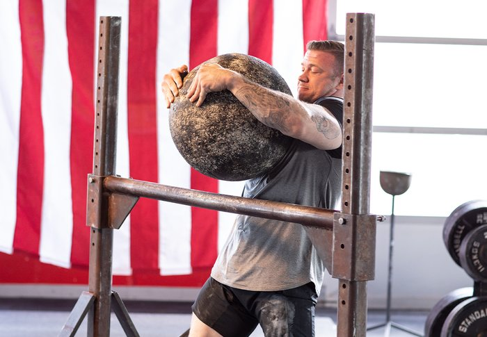
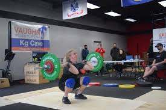
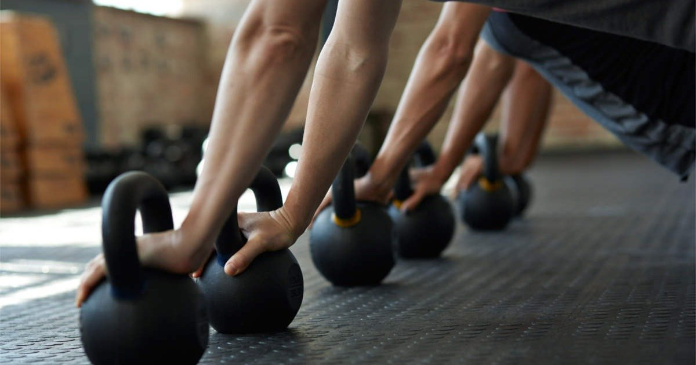
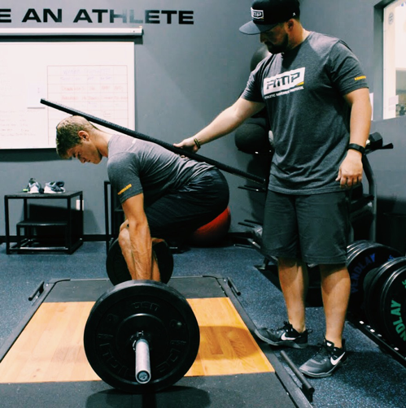

Befoul Fitness offers our members an amazing community to be a part of! Be it joining in on one of our many amazing
group fitness classes or compete in one of locally hosted competitions.
We are proud to be a part of all walks of the fitness life! Be it a Crossfit, Powerlifting, Weightlifting,
or Strongman community. Befoul Fitness hosts local competitions for all of these various groups/communities. Our
spacious gym provides room to accommodate a large collective of lifters and more than one platform if necessary.
Our outdoor area as well as parking lot is utilized for Strongman events.


Befoul Fitness also offers a wide array of fitness classes for those not looking to compete but still actively be
involved with a fitness community. We offer Kettlebell based classes, Crossfit/WOD style classes,
GPP (General Physical Preparedness), Squat/Bench/Deadlift Club, and OLY Club. Click above to download a copy
of our group classes schedule.


Befoul Fitness invites you to come by for a tour and a free 3 day pass to see everything that our community has to offer!